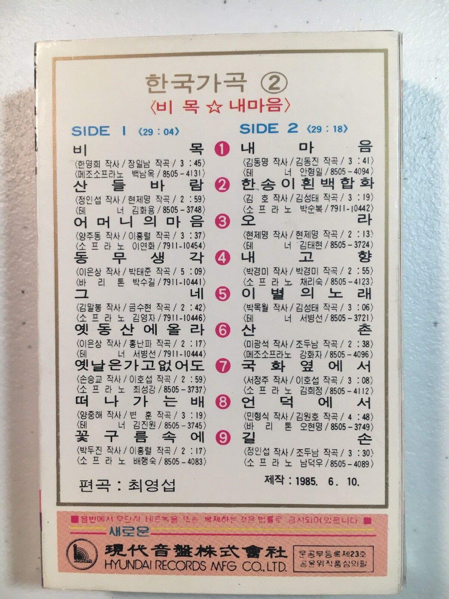

Korean Lyric Songs
At the beginning of marriage years, my cousin in Korea bought me a packet of 5 cassettes containing Korean Lyric Songs.
Lyric Songs are created by combining a poem with western style music. Most songs were developed during the early and mid 20th century

Each cassette contained about an hour of music. (a great planning to fit close to 30 minutes per side, but not to go over it)
During my 30s, this was my main playlist, listened mainly for the beautiful melodies.
Since accompanying lyrics were not readily available.
(I made a duplicate copy of Tape #4, fearing that I may wear out the tape).
Clouds in Nature: Captured in Photography
Along with tracking sunrise and sunset times. A knowledge of moon rise and moon set times and their directions is helpful.
Less predictable but more impactful and more rewarding are the direction and amount of cloud coverage.
One starts looking for any signs of cloud coverage and formations. And if it happens about the time of sunrise and sunset, it is a bonus. Consistently without clouds, one would be tempted to learn Photoshop.
Clouds (Challenges and Trials) in Life
Asked Sister K lately,
Why is this life so difficult and full of challenges?
She replied.
It always has been and always will be, you just have become more aware due to recent events around you.
Mentally and theoretically, it is easy to understand and justify that challenges and trials are part of this life.
Emotionally and spiritually, however, the amount and timing seems overwhelming and more than one can bear.
A discussion among men
Last Sunday, a group men, about 50 in total met as a group. The age of the group spanned 70 decades
The topic of discussion was a passage from Doctrine and Covenants 59, verse 7
Thou shalt thank the Lord thy God in all things
A brother in his mid 80s suggested that he was not particularly grateful for the onset of dementia
The discussion leader then suggest the distinction between
Gratitude for vs Gratitude in
We are grateful for things that we have, that is the first step. However even when things are taken away, we are still grateful.
We are not grateful for dementia, but are grateful in dementia.
Although he was not mentioned during the 40-minute long discussion, thought of Job, Chapter 19.
v25 For I know that my redeemer liveth, and that he shall stand at the latter day upon the earth:
v26 And though after my skin worms destroy this body, yet in my flesh shall I see God:
Everything, even friends and family were taken from Job. Yet he thanked or praised God and placed his trust in him.
Korean Lyric Song: 저 구름 흘러가는 곳
Been listening to this song, sung by a number of artists. It can be translated as, That place where Clouds Gather
Each artist gave their unique interpretation.
However, I didn’t expect a version from Barbara Bonney. Back in 1998, she released an album entitle Portrait1 The first 5 songs were Korean Lyric Songs.
The 5th entry reads,
저 구름 흘러가는 곳 Cho Gureum Huloganen Goht (김동진 / 김용호)
Grateful that we can hear this music sung and interpreted by artists in Korea and US.
Confirming that there are universal struggles that are contained in music and poems of each culture. Also an universal yearning to attain a place of peace and rest.
Barbara sings “He shall feed his flock” from Handel’s ‘Messiah’
Barbara Bonney sings “저 구름 흘러가는 곳(Where the wind blows)”
저 구름 흘러가는 곳
저 구름 흘러가는 곳 아득한 먼 그곳 그리움도 흘러가라 파아란 싹이 트고 꽃들은 곱게 피어 날 오라 부르네 행복이 깃든 그 곳에 그리움도 흘러가라 저 구름 흘러가는 곳 이 가슴 깊이 불타는 영원한 나의 사랑 전할 곳 길은 멀어도 즐거움이 넘치는 나라 산을 넘고 바다를 건너 저 구름 흘러가는 곳 내 마음도 따라가라 그대를 만날 때까지 내 사랑도 흘러가라
저 구름 흘러가는 곳 가없는 하늘 위에 별빛도 흘러가라 황홀한 날이 와서 찬란한 보금자리 날 오라 부르네 쌓인 정 이룰 그곳에 별빛도 흘러가라 저 구름 흘러가는 곳 이 가슴 깊이 불타는 영원한 나의 사랑 전할 곳 길은 멀어도 즐거움이 넘치는 나라 산을 넘고 바다를 건너 저 구름 흘러가는 곳 내 마음도 따라가라 그대를 만날 때까지 내 사랑도 흘러가라
That place where the clouds are flowing
Translation Courtesy of Google
That place where the clouds are flowing, far away The longing will pass and blue buds will sprout. The flowers bloom beautifully and call me to come Wherever happiness resides, let longing also flow. Where the clouds flow, this heart burns deep A place to convey my eternal love A country full of joy even though the road is long Cross the mountains and the sea Where the clouds flow, follow my heart too. Let my love flow until I meet you
Where the clouds flow, above the endless sky The starlight also flows by and an ecstatic day comes The brilliant nest calls me to come Let the starlight flow to the place where the accumulated affection will be fulfilled. Where the clouds flow, this heart burns deep A place to convey my eternal love A country full of joy even though the road is long Cross the mountains and the sea Where the clouds flow, follow my heart too. Let my love flow until I meet you
The place where those clouds flow
Translation by ChatGPT 3.5
The place where those clouds flow, a distant and faraway place Let even the longing flow, and the blue sprouts grow The flowers bloom beautifully, calling for the day to come In that place where happiness resides, let even the longing flow The place where those clouds flow, deeply burning in my heart The eternal place to convey my love Though the road is long, it’s a land overflowing with joy Crossing mountains and seas To the place where those clouds flow, let my heart follow Until I meet you, let my love flow
The place where those clouds flow, above the boundless sky Let even the starlight flow, for the ecstatic day to come A brilliant sanctuary, calling for the day to come In that place where accumulated affections will come true, let even the starlight flow The place where those clouds flow, deeply burning in my heart The eternal place to convey my love Though the road is long, it’s a land overflowing with joy Crossing mountains and seas To the place where those clouds flow, let my heart follow Until I meet you, let my love flow
That Place : Where Clouds Gather
That place where clouds drifts and flows
The longing will gather to it also
The place of a new birth and flowers blooming.
It is calling me home.
That place of happiness, the destiny, of longing.
That place where clouds drifts and flows
The yearning of hearts burns with desire.
That place, of happiness, for eternal love is far
Over mountains and oceans.
That place where clouds drifts and flows
My heart and longings will follow
Till we meet, my love will flow and drift
To that place where clouds drift and flow.
Footnotes
http://daihanmusic.co.kr/Item/ItemInfo?ITEM_CD=9620079081239↩︎